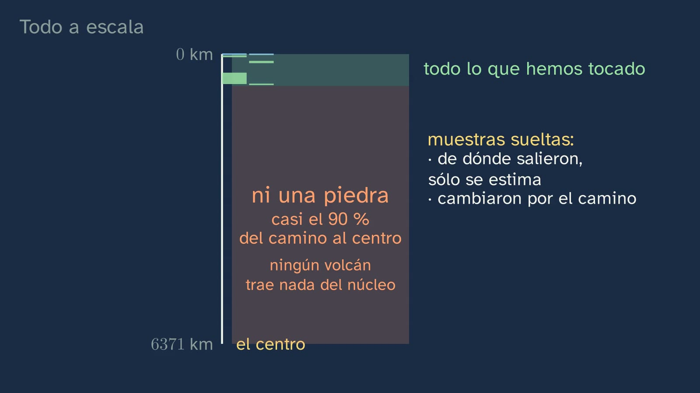
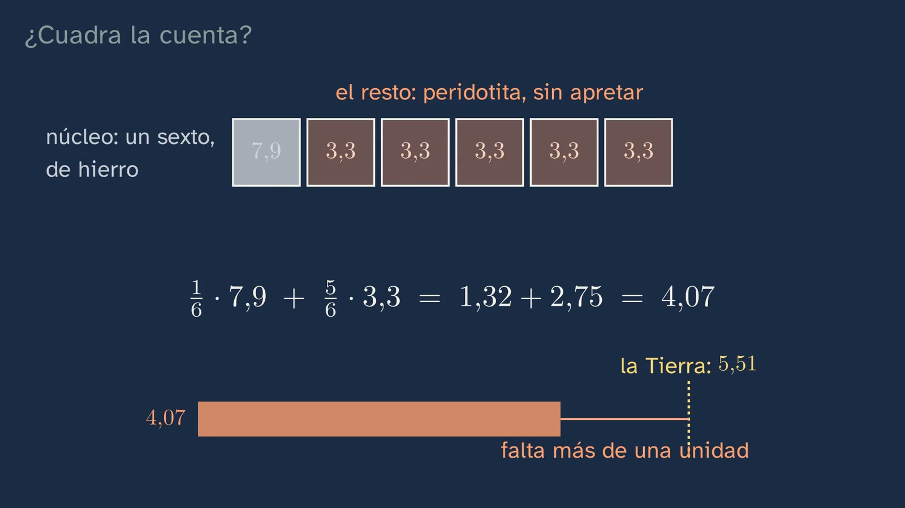

Lo que hemos tocado y lo que no
En pocas palabras
La clase 1 dejó un enigma: la Tierra es el doble de densa que sus rocas, así que lo que pesa tiene que estar abajo. Esta clase lo busca, separando con cuidado lo que hemos tocado del interior de la Tierra y lo que no.
Primero, los métodos directos, con sus límites: - el pozo de Kola (12 262 m), que no encontró la capa de basalto que las ondas hacían esperar: una interpretación corregida por una muestra; - la mina más profunda, de unos 4 km; - los xenolitos, trozos del manto que suben con el magma en horas o pocos días (Lanzarote, la Garrotxa, el Campo de Calatrava), y cómo sus minerales, espinela o granate, dicen de qué profundidad vienen; - las peridotitas de Ronda, uno de los mayores afloramientos de manto del mundo; - los diamantes, con sus inclusiones: la ringwoodita, de entre 410 y 660 km, y la muestra más honda, de algo más de 660.
Una sección de la Tierra a escala, con zooms sucesivos, enseña que todo eso cabe en la franja de arriba: del 90 % del camino al centro no tenemos ni una piedra.
Después, los métodos indirectos uno a uno, con su instrumento y su ejemplo: - el gravimétrico: un gravímetro es, en esencia, un peso colgado de un muelle, y la pizarra lo pasea sobre rocas densas y ligeras mientras dibuja la curva de la gravedad; así se buscan yacimientos sin perforar; - el magnético: la brújula de Halley, que en Londres giró 17° en un siglo, demuestra, junto con la temperatura de Curie de la magnetita (unos 580 °C), que el campo no lo da un imán de roca, sino algo que se mueve: hierro fundido en el núcleo; - el geotérmico: el gradiente, y la recta alargada hasta el centro, que da 160 000 °C, unas treinta veces lo que se estima. Lo que aporta: la Tierra está caliente y pierde calor, y como la recta no puede seguir, más abajo el calor viaja de otra manera: el manto, sólido, fluye muy despacio y lo lleva (allí sube menos de 1 °C por kilómetro). Lo trata la clase 5; - el sísmico, que se anuncia para las clases 3 y 4; - y los meteoritos de hierro, que se tocan pero no son de la Tierra, con el patrón de Widmanstätten y el supuesto que hay detrás: que la Tierra y esos asteroides se hicieron con los mismos materiales, roca y metal (no valdría para Júpiter o Saturno, que son sobre todo hidrógeno y helio).
El «para y piensa» del meteorito lleva a cómo se separa en capas un planeta. Y la cuenta (el problema antes que la explicación) muestra que un sexto de hierro y cinco sextos de roca dan 4,07, no 5,5. Lo que falta es la presión, que aprieta las dos capas. Se desmonta el error de que «los métodos indirectos son suposiciones», y el repaso final da los métodos con su nombre de libro y la profundidad que ve cada uno.
Objetivo. Al terminar, el alumnado sabrá distinguir los métodos directos de los indirectos, decir hasta dónde llega cada uno y explicar con varias pruebas independientes por qué la Tierra tiene un centro denso y metálico, y por qué el hierro solo no basta: también cuenta la presión.
Lo que esta ficha añade: - una tabla de los métodos, con qué mide cada uno y qué profundidad ve; - lo que la clase deja fuera, y por qué; - los errores típicos, con los documentados en la investigación y los que repiten los apuntes y vídeos; - las soluciones de todo; - una actividad para el aula, «La Tierra en un pasillo», con su hoja.
Currículo
Real Decreto 243/2022, Biología, Geología y Ciencias Ambientales (texto consolidado del BOE, comprobado el 03/10/2026; su última actualización, del 02/07/2026, sólo toca el artículo 23.4). Los minutos son los del vídeo.
| Elemento | Qué dice el decreto | Dónde se trabaja |
|---|---|---|
| Saber básico (bloque D) | «Estructura, composición y dinámica de la geosfera. Métodos de estudio directos e indirectos.» | Toda la clase: los directos (2:50 a 8:18) y los indirectos (8:18 a 14:55) |
| Saber básico (bloque C) | «La historia de la Tierra: principales acontecimientos geológicos.» | Sólo uno, el que explica la estructura: cómo se separó la Tierra en capas (12:30). La formación del planeta, con sus fechas, es del tema 9 |
| Saber básico (bloque A) | «La evolución histórica del saber científico: la ciencia como labor colectiva, interdisciplinar y en continua construcción.» | Kola y la capa de basalto que no estaba: una interpretación corregida (2:50) |
| Competencia específica 1 | «Interpretar y transmitir información y datos científicos, argumentando sobre estos con precisión y utilizando diferentes formatos para analizar procesos, métodos, experimentos o resultados de las ciencias biológicas, geológicas y medioambientales.» | La sección a escala y la gráfica de la temperatura con la profundidad |
| Competencia específica 3 | «Diseñar, planear y desarrollar proyectos de investigación siguiendo los pasos de las metodologías científicas…» Su descripción pide «comprender en profundidad la diferencia entre una impresión u opinión y una evidencia». | El error típico: un método indirecto es una medida, no una suposición (18:06) |
| Competencia específica 4 | «Buscar y utilizar estrategias en la resolución de problemas analizando críticamente las soluciones y respuestas halladas y reformulando el procedimiento si fuera necesario…» | La cuenta del núcleo (14:55) y la recta del calor |
| Criterio 1.1 | «Analizar críticamente conceptos y procesos relacionados con los saberes de la materia, interpretando información en diferentes formatos (modelos, gráficos, tablas, diagramas, fórmulas, esquemas...).» | La sección a escala; la gráfica del gradiente alargado |
| Criterio 1.3 | «Argumentar sobre aspectos relacionados con los saberes de la materia, defendiendo una postura de forma razonada y con una actitud abierta, flexible, receptiva y respetuosa ante la opinión de los demás.» | La pregunta abierta: ¿vale más una muestra que se toca o muchas medidas indirectas que coinciden? |
| Criterio 2.3 | «Argumentar sobre la contribución de la ciencia a la sociedad y la labor de las personas dedicadas a ella… entendiendo la investigación como una labor colectiva e interdisciplinar en constante evolución e influida por el contexto político y los recursos económicos.» | Kola, en plena Guerra Fría. Para ampliar, la nota de Kola de esta ficha: se dejó de perforar en 1992, por el calor y por el fin de la Unión Soviética |
| Criterio 3.1 | «Plantear preguntas, realizar predicciones y formular hipótesis que puedan ser respondidas o contrastadas, utilizando métodos científicos…» | Las dos predicciones: la temperatura del centro y la cuenta |
| Criterio 4.1 | «Resolver problemas o dar explicación a procesos biológicos, geológicos o ambientales, utilizando recursos variados como conocimientos propios, datos e información recabados, razonamiento lógico, pensamiento computacional o herramientas digitales.» | La media con pesos del núcleo y el manto |
| Criterio 4.2 | «Analizar críticamente la solución a un problema… y modificar los procedimientos utilizados o las conclusiones obtenidas si dicha solución no fuese viable o ante nuevos datos…» | El hierro solo no basta; la recta no se puede alargar hasta el centro; la capa de basalto que no estaba |
Lo que hay que traer: - de la clase 1, que la Tierra es el doble de densa que sus rocas y qué es la densidad; - de la ESO, las capas de la Tierra.
En el mínimo estatal, los métodos de estudio del interior se ven en Biología y Geología de 4.º, que es optativa, así que parte del alumnado llega sin haberlos visto. En Castilla y León la ESO ya enseña los dos modelos de capas.
Cómo está construida la clase
Capítulos del vídeo
Unos veinte minutos, en once capítulos. Es una clase de teoría: Nil sale a su mesa del aula.
| Capítulo | Qué pasa | Por qué así |
|---|---|---|
| Qué vamos a ver (0:00) | El mapa del tema: la segunda de cinco. | Saber dónde se está. |
| Una pregunta de la clase anterior (0:24) | El enigma: 5,5 frente a 2,7. | Recuperar antes de seguir. |
| Las soluciones de la clase anterior (0:58) | Las tres, breves, con la recta de densidades y la rejilla de 1600 casillas. | Cerrar lo pendiente sin alargarlo. |
| Trozos del manto (2:08) | Nil: en Girona hay trozos del manto, y nadie bajó a buscarlos. Cómo los arranca el magma y por qué no se hunden. | Un gancho cercano y real, y un porqué. |
| Lo que hemos tocado (2:50) | Directo e indirecto, definidos. Los testigos de sondeo; Kola: el calor y la capa de basalto que no estaba; la mina más profunda. | Cada método directo, con lo que da y hasta dónde llega; y una interpretación corregida por una muestra. |
| La roca que sube sola (4:43) | Los xenolitos (la foto es de Lanzarote) y el medidor de presión de sus minerales; Ronda, un afloramiento de manto; los diamantes y sus inclusiones; y todo, a escala, con zooms sucesivos. | Lo que no ofrece ningún libro: España en las muestras, y la escala que enseña cuánto falta. |
| Lo que sabemos sin tocarlo (8:18) | La radiografía como comparación; el gravímetro, un peso colgado de un muelle, y la gravedad punto a punto; la brújula de Halley y la dinamo; el gradiente, la recta alargada y lo que sí enseña el calor; las ondas, anunciadas. | Cada método indirecto, con su instrumento, su ejemplo y su porqué. |
| Piedras que caen del cielo (12:30) | Los meteoritos de hierro y el patrón de Widmanstätten; el para y piensa; cómo se separa en capas un planeta, y el supuesto de los mismos materiales. | La pista que dejó la clase 1, resuelta razonando. |
| ¿Cuadra la cuenta? (14:55) | Seis cajas: un sexto de hierro, cinco de roca. Sale 4,07. La presión aprieta las dos capas y sale 5,5; la cuenta no es una prueba más, sino que la explicación es posible. Tres caminos independientes, un centro de hierro. | El problema antes que la explicación, y la honestidad sobre qué prueba y qué no. |
| ¿Son suposiciones? (18:06) | El error típico, desmontado: un método indirecto es una medida; lo que puede fallar es la interpretación. Y lo directo también tiene trampas. | El error, a la vista. |
| Para practicar y seguir pensando (18:59) | El repaso, con los nombres de libro y la profundidad que ve cada método; tres ejercicios y la pregunta abierta. | Práctica espaciada: las soluciones abren la clase 3. |

Los métodos, de un vistazo
Es la tabla que el profesorado espera encontrar, con la profundidad que «ve» cada método, que no suele estar en los libros. «Directo» quiere decir que se estudia un trozo del propio interior de la Tierra; «indirecto», que se mide algo y se deduce cómo es por dentro.
| Método | Tipo | Qué mide o qué da | Hasta dónde llega | En la clase |
|---|---|---|---|---|
| Sondeos y minas | Directo | Testigos: cilindros de roca | Kola, 12 km; la mina más profunda, unos 4 km | Kola y Mponeng |
| Xenolitos | Directo | Trozos del manto arrancados por el magma | Los españoles, unos 30–60 km; los de las kimberlitas, 150–200 km | Lanzarote, Garrotxa, Calatrava |
| Afloramientos de manto | Directo | Manto subido por las placas | Las peridotitas de Ronda vienen de unos 60–70 km | Ronda |
| Inclusiones en diamantes | Directo | Minerales encerrados al crecer el diamante | Casi todos, 150–200 km; la más honda, algo más de 660 km | Juína (ringwoodita) y Cullinan |
| Densidad media | Indirecto | La masa y el volumen de la Tierra | El planeta entero | La clase 1 |
| Gravimétrico | Indirecto | La gravedad punto a punto (gravímetro) | Sobre todo la corteza y lo de arriba | Yacimientos sin perforar |
| Magnético | Indirecto | El campo magnético y cómo cambia | Su origen, el núcleo; la corteza aporta una parte pequeña | La brújula de Halley |
| Geotérmico | Indirecto | La temperatura en pozos y minas, y el calor que sale | Lo de arriba | El gradiente de Kola y de los continentes |
| Sísmico | Indirecto | Cómo y cuándo llegan las ondas de los terremotos | El planeta entero | Clases 3 y 4 |
| Meteoritos | Indirecto | Trozos de otros cuerpos: se tocan, pero no son de la Tierra | Por comparación, el núcleo (los de hierro) | Muonionalusta, Hoba |
¿Y el método eléctrico? Tres recursos españoles lo presentan como si mirara el interior del planeta. Mide la resistencia eléctrica del suelo y sirve para los primeros kilómetros, como mucho: agua subterránea, yacimientos. Por eso no está en la clase.
Plan de una sesión de 50 minutos
| Minutos | Qué se hace |
|---|---|
| 0–5 | Sin vídeo: las soluciones de la clase 1 en la pizarra, y una pregunta: ¿qué es lo más hondo que crees que hemos tocado del interior de la Tierra? Cada cual apunta una cifra. |
| 5–17 | Vídeo hasta «Lo que sabemos sin tocarlo» (8:18): los métodos directos y la escala. ¿Acertaron su cifra? |
| 17–32 | La actividad, «La Tierra en un pasillo» (primera parte), con las marcas de esta ficha. |
| 32–42 | Vídeo de 8:18 a 18:06: los indirectos, los meteoritos y la cuenta. Hacer la cuenta en el papel antes de verla resuelta. |
| 42–50 | Puesta en común con la tabla «Los métodos, de un vistazo»: completarla entre todos. El resto del vídeo y los ejercicios, para casa. |
Notas para el profesorado
Kola, bien contado. - La Unión Soviética empezó a perforar en 1970 y llegó a 12 262 m: el agujero más profundo que se ha hecho en vertical. Hay pozos de petróleo más largos, pero inclinados o tumbados. Las fuentes dan 1989 o 1990 para el récord. - A unos 10 km la roca estaba a unos 180 °C, casi el doble de lo esperado (el informe del USGS da 181–185 °C a 10 909 m), y hacia los 12 km, a unos 212 °C. - Las ondas marcaban un cambio hacia los 7 km, que se interpretaba como el paso del granito al basalto: la discontinuidad de Conrad, que Victor Conrad propuso con prudencia en 1925. El pozo no la encontró: había gneises arcaicos fracturados y con agua. - Ojo: en sus primeros 6,8 km sí atravesó basaltos transformados, de la serie de Pechenga. Lo que no estaba era la capa basáltica profunda. - Se dejó de perforar en 1992: el calor ablandaba la roca, y con el fin de la Unión Soviética se acabó el dinero. Es un buen ejemplo para el criterio 2.3. - La carrera de la Guerra Fría fue por perforar más hondo. Llegar al manto era la meta del proyecto estadounidense Mohole, cancelado en 1966 por sus costes. - El «pozo al infierno» es un bulo de 1989: el canal no lo cuenta ni para desmentirlo.
El agua de la ringwoodita. El grano de ringwoodita del diamante de Juína (Pearson y otros, 2014) llevaba alrededor de un 1,5 % de agua en peso. El artículo concluye que esa parte del manto tiene agua «al menos localmente», en torno al 1 %. No se debe hablar de «océanos bajo nuestros pies»: es el titular de una nota de prensa, no la conclusión del artículo.
Ronda. Unos 300 km² en el macizo de Ronda, y unos 450 con los de Ojén y Carratraca. Es el mayor afloramiento de manto subcontinental conocido, según varios autores; sin «subcontinental», la ofiolita de Omán es mucho mayor. Entró en la corteza hace unos 20–25 millones de años, y cómo exactamente aún se discute. Lo retoma el tema 2.
La cuenta, con honestidad. Las densidades medias del núcleo (11) y del manto y la corteza (4,45) salen del modelo PREM (Dziewonski y Anderson, 1981), que se ajustó a las ondas, a la masa y al giro de la Tierra. Por eso la cuenta da 5,5 por construcción: no prueba nada nuevo, sino que la explicación del hierro y la presión es posible. La clase lo dice. Los tres caminos independientes son lo que pesa la Tierra, los meteoritos y el magnetismo.
El núcleo no es hierro puro. A esa presión, el hierro puro sería algo más denso que el núcleo: el externo pesa entre un 5 y un 10 % menos. Por eso se piensa que lleva, además de níquel, elementos más ligeros (azufre, silicio, oxígeno…); cuáles y cuánto, se discute. Lo trata la clase 5.
La plomada del Himalaya, que el profesorado puede echar de menos aquí, está en la clase 5, junto a la isostasia que explica.
Por qué baja el gradiente. Cerca de la superficie, el calor sale por conducción a través de roca rígida y la temperatura sube deprisa: de media, 25–30 °C por kilómetro en los continentes. En el manto, que es sólido pero fluye muy despacio, el calor lo lleva el movimiento (convección), y allí la temperatura sube menos de 1 °C por kilómetro. Lo trata la clase 5; el origen del calor, el tema 2.
Errores típicos y cómo se tratan
- «Los métodos indirectos son suposiciones; lo único seguro es lo que se toca». No está documentado como idea del alumnado, pero lo enseñan por escrito siete de veinte apuntes y recursos españoles revisados. Un método indirecto es una medida, repetible con instrumentos. Lo que puede fallar es la interpretación, y por eso se cruzan varios: en Kola, una muestra corrigió lo deducido de las ondas. Y lo directo también tiene trampas: una muestra suelta pudo cambiar por el camino, y no se sabe con exactitud de dónde salió.
- «Lo que sale de los volcanes nos enseña cómo es el núcleo». Granda Vera (1988) preguntó a alumnos de 3.º de BUP (16 y 17 años) de un instituto de Antequera qué pruebas demostrarían cómo es el núcleo: el 69 % dio los materiales de los volcanes, el 12 % las ondas sísmicas y el 3 % las perforaciones (la propia pregunta daba por hecho un núcleo «semifluido e incandescente»). Ejarque, Bravo y Mazas (2016) encontraron lo mismo en casi la mitad de 53 alumnos de 3.º de ESO de Zaragoza. La escala lo desmonta: el magma se forma a decenas o pocos centenares de kilómetros, y ningún volcán trae nada del núcleo.
- «El manto es líquido; el magma es el manto». El magma se forma cuando una pequeña parte del manto se funde; el manto es sólido, aunque fluya en millones de años. Lo trata a fondo la clase 5.
- «Un meteorito se toca, así que es un método directo». Se toca, pero no es un trozo de la Tierra: por eso cuenta como indirecto. Lo dice la clase.
- «Cada tipo de meteorito es un trozo de una capa de la Tierra». Cinco de veinte recursos lo dan a entender. Los meteoritos de hierro son, en su mayoría, trozos del núcleo de asteroides que se separaron en capas como la Tierra. Por comparación nos dicen de qué estará hecho el núcleo de la Tierra, pero no son de la Tierra.
- «El campo magnético lo produce el rozamiento entre capas» o «la gravedad». Granda Vera (1988): el 17 % dio el rozamiento y el 48 % no sabía; Dahl, Anderson y Libarkin (2005), con docentes en ejercicio y en formación, encontraron que la causa más elegida era la gravedad. La clase da la prueba de que viene de algo que se mueve (la brújula de Halley) y el mecanismo, como una dinamo.
- Alargar una tendencia más allá de los datos. A 25 °C por kilómetro, el centro estaría a unos 160 000 °C, unas treinta veces más de lo que se estima.
- Cifras de Kola mal dadas. Circulan «13 km», «15 o 20 km», «en Siberia» o «230 °C». El pozo está en la península de Kola, en el noroeste de Rusia, y las cifras buenas están en la nota de Kola.

Preguntas y soluciones
Para y piensa (dentro del vídeo)
- ¿Cuál era la densidad media de la Tierra, y cuál la de las rocas que pisamos? La Tierra, 5,5 g/cm³; un granito, unos 2,7; un basalto, como mucho 3,3.
- Si la temperatura siguiera subiendo 25 °C por kilómetro hasta el centro, ¿cuánto habría allí? 6371 × 25 = 159 275: unos 160 000 °C. Se estima que en el centro hay entre 5000 y 6000 °C, unas treinta veces menos (159 275 / 5500 ≈ 29). La temperatura no sigue subiendo igual.
- ¿Por qué un trozo de hierro que viene del espacio nos dice algo del centro de la Tierra? Porque muchos asteroides se fundieron y se separaron en capas, como la Tierra: el hierro, más denso, se hundió y formó un núcleo. Después chocaron y se rompieron. La mayoría de los meteoritos de hierro son trozos de esos núcleos: nos dicen de qué estará hecho el de la Tierra.
- Con un núcleo de hierro (7,9) que ocupa un sexto del volumen y el resto de roca sin apretar (3,3), ¿sale 5,5? 7,9/6 + 5 × 3,3/6 = 1,32 + 2,75 = 4,07. No llega. Si el manto se quedara en 3,3, el núcleo tendría que tener (5,5 − 2,75) × 6 = 16,5: más que el hierro más apretado del centro (unos 13). La presión aprieta las dos capas. Con las densidades medias del modelo PREM, 11/6 + 5 × 4,45/6 = 1,83 + 3,71 ≈ 5,5.
Para practicar (las soluciones abren la clase 3)
- Clasifica en directos o indirectos: un sondeo, un xenolito, un gravímetro, una brújula, un sismógrafo y un diamante con inclusiones.
- Directos: el sondeo (sus testigos), el xenolito y el diamante con inclusiones, porque son trozos del interior.
- Indirectos: el gravímetro, la brújula y el sismógrafo, porque miden algo y se deduce cómo es el interior.
- Si el núcleo ocupa un sexto del volumen, su densidad media es 11 y la de la Tierra, 5,5, ¿qué parte de la masa está en el núcleo? La masa es densidad por volumen. La del núcleo, en proporción, es 11 × 1/6; la de la Tierra, 5,5 × 1. La parte del núcleo es (11/6) / 5,5 = 1/3: un tercio. Con el modelo PREM completo, el 32,5 %.
- ¿Qué tiene de bueno y de malo un xenolito como muestra del manto?
- De bueno: es manto de verdad, que se puede tocar, cortar y analizar, y sus minerales dicen de qué profundidad viene.
- De malo: es una muestra suelta; su profundidad se estima; cambió por el camino al enfriarse y descomprimirse, y a veces reaccionó con el magma; y sólo llega a decenas o pocos centenares de kilómetros.
Para seguir pensando. ¿Vale más una muestra que se toca o muchas medidas indirectas que coinciden? No tiene respuesta de libro. Da para discutir tres cosas: - qué quiere decir «ver» algo: también una muestra hay que interpretarla; - por qué la coincidencia de caminos independientes da confianza; - y cuándo una sola muestra puede tumbar una interpretación, como en Kola.
Conviene pedir que cada postura dé un ejemplo de la clase (criterio 1.3).
Una actividad para el aula
La Tierra en un pasillo (unos 15 minutos para la primera parte y 10 para la segunda; en grupos de tres o cuatro).
Material: una cinta métrica de al menos 7 m (o un rollo de papel de 7 m), cinta adhesiva de colores y rotuladores. A escala, un metro son mil kilómetros: el radio de la Tierra mide 6,37 m.
- Predicción (criterio 3.1). Antes de medir, cada grupo pega una marca donde cree que llega lo más hondo que hemos tocado.
- Las marcas. Desde el «suelo» (el 0 de la cinta), en centímetros:
| Qué | Profundidad real | En el pasillo |
|---|---|---|
| La mina más profunda | unos 4 km | 0,4 cm |
| El pozo de Kola | 12,3 km | 1,2 cm |
| Los xenolitos españoles | unos 30–60 km | 3–6 cm |
| Los xenolitos y diamantes de las kimberlitas | 150–200 km | 15–20 cm |
| La ringwoodita del diamante de Juína | 410–660 km | 41–66 cm |
| La inclusión más honda | algo más de 660 km | algo más de 66 cm |
| El borde del núcleo (PREM) | 2891 km | 2,89 m |
| El borde del núcleo interno (PREM) | 5150 km | 5,15 m |
| El centro | 6371 km | 6,37 m |
- La pregunta. ¿Qué parte del pasillo queda sin ninguna muestra? (De 0,66 m a 6,37 m: casi el 90 %.) ¿Acertaron su predicción? ¿Qué métodos nos dicen algo de ese tramo?
- Segunda parte: la cuenta con cajas (criterio 4.1). En el papel, seis cajas iguales: una de hierro (7,9) y cinco de roca (3,3). Calcular la media y compararla con 5,5. Probar después con 11 y 4,45 (las medias del modelo PREM). Discutir por qué la segunda no es una prueba nueva: esos números se ajustaron a lo que pesa la Tierra.
Fuentes
- Real Decreto 243/2022, texto consolidado (BOE): https://www.boe.es/buscar/act.php?id=BOE-A-2022-5521. ESO: Real Decreto 217/2022 (BOE): https://www.boe.es/buscar/act.php?id=BOE-A-2022-4975.
- Kola: EarthDate (Universidad de Texas), https://www.earthdate.org/episodes/kola-superdeep; USGS, resumen del libro de Kozlovsky (1984), https://pubs.usgs.gov/of/1986/0517/report.pdf; Lobanov y otros (2021), Arktika i Sever 44, doi:10.37482/issn2221-2698.2021.44.267. El proyecto Mohole: National Academy of Sciences, https://www.nasonline.org/about-nas/history/archives/milestones-in-NAS-history/project-mohole.html.
- La mina más profunda (Guinness World Records): https://www.guinnessworldrecords.com/world-records/66169-deepest-mine.
- Xenolitos: Garrotxa (UAB Divulga, 2011), https://www.uab.cat/web/detalle-noticia-1345680342040.html?articleId=1304922551263; Lanzarote (Geoparque), https://geoparquelanzarote.org/en/geositio/lz37-los-hervideros-2/, y Grachev (2012), doi:10.2205/2012ES000515; Campo de Calatrava (Universidad Complutense), https://docta.ucm.es/rest/api/core/bitstreams/5f08b974-1e29-4341-8ba5-37fcdfac8a42/content. La subida rápida: Sparks y otros (2006), doi:10.1016/j.jvolgeores.2006.02.010.
- Ronda y la Sierra de las Nieves: Geolodía Málaga 2019 (Sociedad Geológica de España), https://cehiuma.uma.es/wp-content/uploads/Geologuia_Malaga_2019.pdf.
- Diamantes: GIA (2018), https://www.gia.edu/gems-gemology/winter-2018-how-do-diamonds-form-in-the-deep-earth; Pearson y otros (2014), Nature 507, 221, doi:10.1038/nature13080; Nestola y otros (2018), Nature 555, 237, doi:10.1038/nature25972.
- La gravimetría: el gravímetro, un peso colgado de un muelle (Universidad de Columbia Británica, Geophysics for Practicing Geoscientists, CC BY 4.0), https://gpg.geosci.xyz/content/gravity/gravity_basics.html; ESA, GOCE, https://earth.esa.int/eogateway/documents/20142/37627/GOCE-ESAs-Gravity-Mission.pdf; USGS OFR 95-831, https://pubs.usgs.gov/of/1995/ofr-95-0831/CHAP3.pdf.
- El magnetismo: British Geological Survey, https://geomag.bgs.ac.uk/education/earthmag.html; Halley (1692), Phil. Trans. 16, 563, https://zenodo.org/record/1432132; la temperatura de Curie (Britannica), https://www.britannica.com/science/Curie-point.
- El calor: IPCC (2011), cap. 4, p. 406; Earle, Physical Geology, cap. 9.2 (CC BY 4.0), https://geo.libretexts.org/Bookshelves/Geology/Physical_Geology_(Earle)/09%3A_Earths_Interior/9.02%3A_The_Temperature_of_Earths_Interior; Anzellini y otros (2013), Science 340, 464.
- Los meteoritos: Natural History Museum de Londres, https://www.nhm.ac.uk/discover/types-of-meteorites.html; PSRD (2007), http://www.psrd.hawaii.edu/April07/irons.html; Korotev (Washington University), https://sites.wustl.edu/meteoritesite/?p=230. Júpiter y Saturno, sobre todo hidrógeno y helio (NASA): https://science.nasa.gov/jupiter/jupiter-facts/ y https://science.nasa.gov/saturn/facts/.
- La separación en capas: Earle, Physical Geology, cap. 22.4 (CC BY 4.0); Kleine y Rudge (2011), Elements 7, 41.
- El modelo PREM: Dziewonski y Anderson (1981), doi:10.1016/0031-9201(81)90046-7; EarthScope, https://data.earthscope.org/app/products/portal/emc_model_viewer.html?id=EMC-PREM. El núcleo no es hierro puro: Hirose, Wood y Vočadlo (2021), Nature Reviews Earth & Environment 2, 645.
- Las ideas del alumnado: Granda Vera, A. (1988), Esquemas conceptuales previos de los alumnos en Geología, Enseñanza de las Ciencias 6(3), 239–243, doi:10.5565/rev/ensciencias.5100; McAllister (2014), https://files.eric.ed.gov/fulltext/EJ1101087.pdf.
Sobre esta clase
GinCol Lab es un canal gratuito de ciencia para curiosos. Nil es un personaje ilustrado con voz sintética, creada por ordenador, que no imita a ninguna persona conocida; el guion y esta ficha los escribe una IA (Claude, de Anthropic) y los revisa una persona antes de publicarse. Las fotos de las rocas, el diamante, los meteoritos y el testigo de sondeo son reales, con su autor y su licencia en pantalla. El pozo, el magma, el gravímetro y el planeta que se separa en capas están dibujados. Si ves un error, dínoslo: aprender también es corregir.
Esta ficha se publica con licencia Creative Commons Reconocimiento 4.0: puedes copiarla, adaptarla y usarla en tu aula citando a GinCol Lab.
Cómo citar esta ficha
GinCol Lab (2026). Lo que hemos tocado y lo que no. Ficha docente de GinCol Lab: Biología, Geología y Ciencias Ambientales · 1.º de Bachillerato · La Tierra por dentro · Clase 2 de 5. https://gincollab.github.io/aula/biologia-geologia-ccaa/t01-c2/. CC BY 4.0.
Ficha docente de GinCol Lab · CC BY 4.0 · Código fuente y erratas